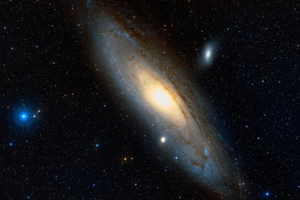
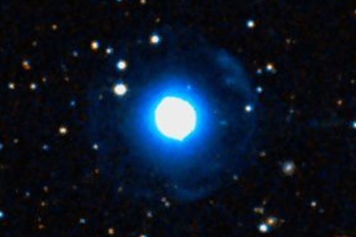

Латинское название: Andromeda
Как рассказывается в мифе, Андромеда едва не лишилась молодой жизни, сожранная морским драконом по имени Кит, из-за своей красоты и материнской гордости. Ее мать Кассиопея хвасталась прелестями своей дочери, сравнивая ее нереидами, о чем ревнивые богини и не преминули нажаловаться старшим богам моря, которые и наслали упомянутое чудовище. Так вот, Андромеда была действительно красива. Персей не задумываясь изменил маршрут и планы жизни, чтобы спасти ее от Кита.
Знаменитая M 31, Галактика Андромеды. Безусловно, это самый ценный объект в созвездии. Одна из ближайших к нам галактик, спиральная гигантская галактика, да еще и со спутниками! Легко различима в темную ночь невооруженным глазом - в хорошую погоду и вне городской засветки, конечно.
Планетарная туманность NGC 7662 со смешным названием Голубой Снежок.
